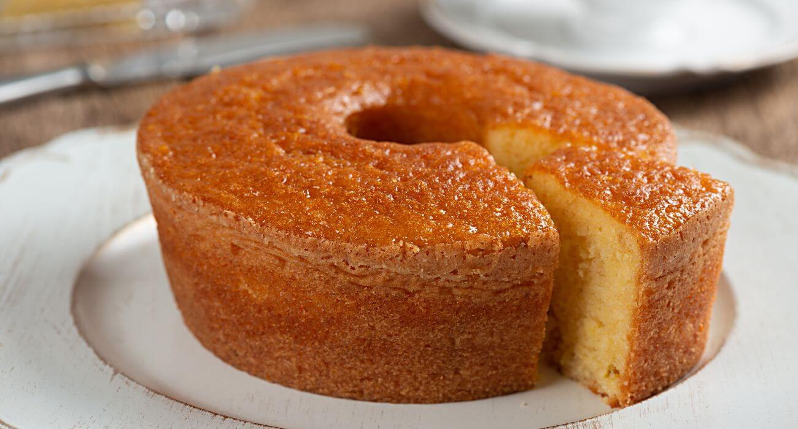

Bolo de Fubá Cremoso
Esta é uma receita clássica de bolo de fubá cremoso, perfeito para acompanhar um café fresquinho. Fica com uma textura incrível!
Ingredientes
- 4 ovos
- 2 xícaras (chá) de açúcar
- 1 xícara (chá) de fubá
- 3 colheres (sopa) de farinha de trigo
- 1/2 xícara (chá) de óleo
- 1 litro de leite
- 1 colher (sopa) de fermento em pó
- Queijo parmesão ralado a gosto (opcional)
- Erva-doce a gosto (opcional)
Modo de Preparo
- No liquidificador, bata os ovos, o açúcar, o fubá, a farinha, o óleo e o leite.
- Acrescente o fermento e misture levemente (pode ser com o liquidificador no modo pulsar ou com uma colher).
- Se desejar, adicione o queijo ralado e/ou a erva-doce e misture.
- Despeje a massa (que é bem líquida mesmo) em uma forma untada e enfarinhada.
- Leve para assar em forno médio (180°C), preaquecido, por cerca de 40 a 50 minutos, ou até dourar.
- O bolo fica com uma consistência cremosa no meio e uma casquinha por cima. Espere amornar para cortar.
Foto do Bolo
